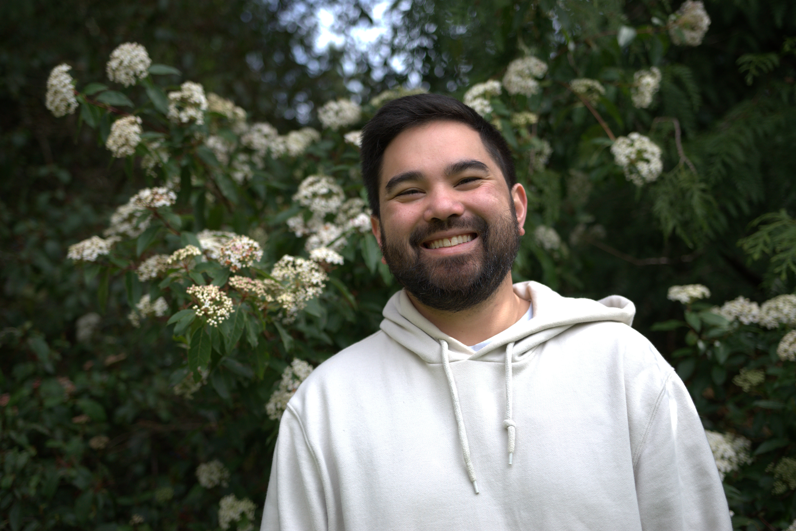

About Me

Hobbies
I am a man of many interests and hobbies. I have so many hobbies that
my wife often makes fun of me for it.
Here are just a few of them:
- Cooking (click here for my favorite recipe)
- Video Games
- Photography
-
Music
- Guitar
- Harmonica
- Saxophone
- Bass
- Djing
- Fish Keeping
- Woodworking
Goals
When I was younger, I always wanted to create and build things. This
curiosity has driven me to pursue a career in computer science, where
I can combine my passion for technology with my creativity.
My current goal is to finish school and start my career as a computer
scientist and hopefully make a positive impact in the field.
Skills
I have experience with various programming languages and technologies, including Python, Java, C++, and PostgreSQL. I have done a little bit of work with web development as well (though very limited).
Contact
You can reach me via email at dliotta@uw.edu.